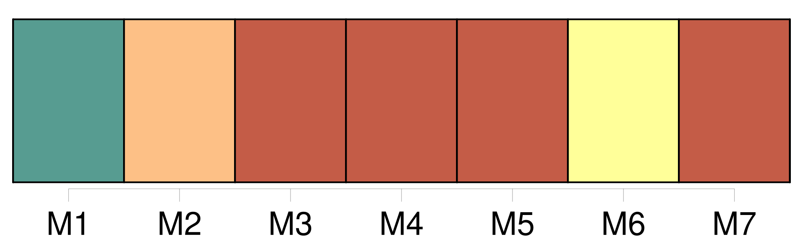
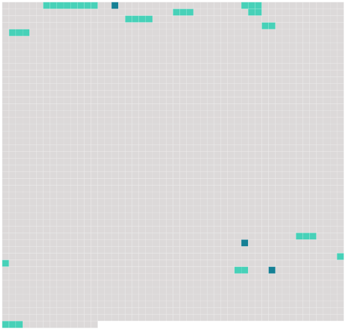

Longueur nb maillons : 14 mentions |
 |
Cette défroque hétéroclite était celle de [feu son père, mort depuis quelques années] , et [dont] il achevait d'user les habits, déjà mûrs pour le fripier à l'époque du décès de [leur premier possesseur] Ainsi accoutré de ces vêtements, peut-être fort à la mode au commencement de l'autre règne, le jeune baron avait l'air à la fois ridicule et touchant ; on l'eût pris pour [son propre aïeul] Quoiqu'il professât pour la mémoire de [son père] une vénération toute filiale et que souvent les larmes lui vinssent aux yeux en endossant ces chères reliques, qui semblaient conserver dans leurs plis les gestes et les attitudes [du vieux gentilhomme défunt] , ce n'était pas précisément par goût que le jeune Sigognac s'affublait de la garde-robe paternelle. [2 phrases] Au moins il tenait à l'aise dans ceux de [son père] Les paysans, habitués à les vénérer sur le dos [du vieux baron] , ne les trouvaient pas ridicules sur celui du fils, et ils les saluaient avec la même déférence ; ils n'apercevaient pas plus les déchirures du pourpoint que les lézardes du château. [37 phrases]
Les fiefs, les métairies, les fermes et les terres qui relevaient du château s'étaient envolés pièce à pièce ; et [le dernier Sigognac] , après des efforts inouïs pour relever la fortune de la famille, efforts sans résultats parce qu'il est trop tard pour boucher les voies d'eau d'un navire lorsqu'il sombre, n'avait laissé à [son] fils que ce castel lézardé et les quelques arpents de terre stérile qui l'entouraient ; le reste avait dû être abandonné aux créanciers et aux juifs. [2 phrases] La sollicitude de [son père] , qu'il regrettait pourtant, ne s'était guère traduite que par quelques coups de pied au derrière, ou l'ordre de lui donner le fouet. En ce moment, il s'ennuyait si fort qu'il eût été heureux de recevoir une de ces admonestations paternelles dont le souvenir lui faisait venir les larmes aux yeux ; car un coup de pied de père à fils, c'est encore une relation humaine et, depuis quatre ans que [le Baron] dormait allongé sous [sa] dalle dans le caveau de famille des Sigognac, il vivait au milieu d'une solitude profonde. [10 phrases]
» dit le jeune homme en ceignant une épée à lourde coquille de fer qu'il détacha du mur et dont il boucla le ceinturon à son dernier trou, car la bande de cuir coupée pour la taille [du vieux baron] eût fait deux fois le tour de celle du fils. |
 |
Il est possible de télécharger la ressource sur la page Ortolang |
Si vous avez des questions ou vous voyez des erreurs, merci d'envoyer un mail à silvia.federzoni89@gmail.com |